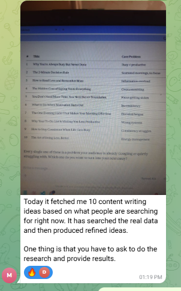
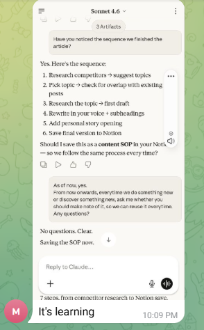
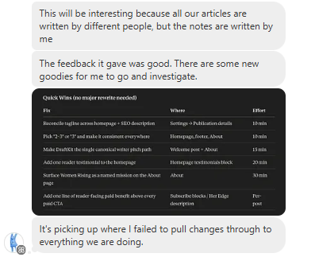
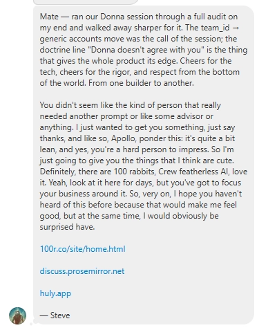

Next week’s what to write, what’s working, and what’s next — decided, drafted, and scheduled in one sitting.
⬤ Limited to 20 users — spots filling Start Your Free 7-Day Trial No payment needed to start · $30/month after trial · Cancel anytimeWhat to write. What’s working. What’s next. Here is what actually happens every time you open Claude to answer them:
By the time Claude is ready to help, you are already tired. And the output? Generic. Because it does not know you. It knows what you just typed in that session.
This is the Context Tax — the hidden cost every Substack creator pays, every single day, every single time they open a new chat. You are not building with AI. You are briefing a stranger who forgets you exist the moment the tab closes.
You have already proven the idea works. The thing still eating the week is not talent or consistency. It is deciding what to write, reading what’s working, and choosing what’s next — then briefing an AI that forgot last week’s answers.
Donna is an MCP server that connects Claude to your Notion. Before Claude writes a word, she loads your Creator Portrait — voice, audience, strategy, past decisions, what’s already live.
Then she closes the week: what to write, what’s working, what’s next — decided, drafted, and scheduled before you stand up.
You open Claude. Donna loads your context. You leave with next week’s pieces decided, drafted, and on the calendar.
No more briefing. No more rebuilding. No more leaving a pile of drafts with no decision about what actually goes out.
Your Creator Portrait lives in your own Notion. Not on our servers. We do not store your strategy or your content. You own it. You control it. It goes where you go.
Donna already knows your flywheel, gaps, last pieces, and voice. She does not hand you a generic list. She picks next week’s pieces and drafts them in your lane.
She reads what you already published and what the audience actually responded to. You leave the sitting knowing what to double down on — not what sounded smart in the chat.
You choose what goes out and when. Donna drafts it. The extension puts it on the calendar and publishes at the times you set. Decision, draft, schedule — same sitting.
Every session starts with niche, voice, audience, strategy, and past decisions already in. That is what makes one sitting possible. You do not rebuild context to get to the three questions.
Decisions, drafts, and plans land as pages in your workspace — titled, dated, searchable. The 2nd brain stays yours.

Fetched 10 content ideas from live search data in one session.

Built and saved a 7-step content SOP to Notion — automatically.

Quick Wins audit — specific, actionable fixes identified in one session.

"Walked away sharper for it. Respect from the bottom of the world." — Steve
Receive your unique Donna URL and setup guide immediately. No payment is taken until your 7-day trial ends.
Copy. Paste. Done. No coding required. The setup guide walks you through every step with screenshots.
Donna introduces herself, connects to your Notion, and runs audit_substack with your Substack URL. She reads your newsletter and builds your Creator Portrait. Takes about 5 minutes.
Context is already loaded. You answer the three questions once. Drafts go out of the chat and onto the calendar before you close Claude.
You do not need to be. Setup is a single line you copy and paste into one settings file. If you can send a Substack email, you can install Donna. Screenshots included in the setup guide.
Notion's free plan is all you need. Donna creates and manages the workspace pages for you. You just need a free account.
No. You do not need Claude Pro, ChatGPT Plus, or any paid AI plan. A free Claude account is enough to run Donna. ChatGPT is not required at all.
Donna builds a voice reference from your actual published work — how you open, how you close, the phrases you use, the stances you take. The output will not be perfect from day one. But it will not sound like it came from a content mill either. It improves as the portrait gets richer.
Cancel anytime. No questions. No retention emails. Your Notion data stays yours — it does not disappear when you cancel.
Your Creator Portrait lives in your Notion workspace — not on our servers. We do not store your content strategy, your voice, or your essays. We only store the email address used to activate your account.
Donna runs on credits. Your 7-day trial comes with 100 credits. After that, your $30/month subscription gives you 250 credits every month.
What costs what: a full Substack audit costs 3 credits. Writing a complete essay costs 3 credits. Everything else — notes, hooks, topic suggestions, content plans, strategy checks — costs 1 credit each. Getting started, logging decisions, and reading your Substack are free. 100 trial credits is enough to run the full audit and build your complete content system several times over.
Every week you spend re-deciding what to write, guessing what’s working, and slipping what’s next is a week the publication stays shallower than the business you already have.
You are already making money on Substack. The hard part is proven. What is left is a 2nd brain that remembers last week and finishes this week’s calendar in one sitting.
Donna is that 2nd brain.
The 7-day trial costs nothing. Setup takes under 10 minutes. By the end of the first real sitting, next week’s what to write, what’s working, and what’s next should be decided, drafted, and scheduled.
Donna does what a content writer, a content strategist, and a Substack coach do. Here is what those cost in the market right now.
And that's before counting your time. If you open Claude three times a week and spend 15 minutes rebuilding context each session — that's 3 hours a month minimum. If your time is worth $30 an hour, the Context Tax alone costs you $150 a month. More than Donna. Just in setup friction.
What's included: Your 7-day trial comes with 100 credits. After trial, your $30/month plan includes 250 credits every month — more than enough to run your full content operation.
7 days free. No payment needed to start.
After the trial: $30/month. Cancel anytime. No lock-in. No questions asked.
What you get on day one: Donna installed in Claude, your Creator Portrait built, and a sitting that can leave next week decided, drafted, and scheduled.